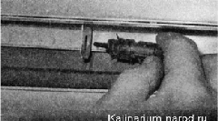
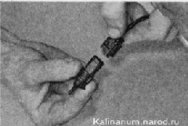

Датчик температуры окружающего воздуха заменаДатчик температуры окружающего воздуха установлен за передним бампером на передней панели кузова. Совет Убедиться в исправности датчика температуры можно, сравнивая его показания на щитке приборов с бытовым термометром жидкостного типа. Нарушения в показаниях температуры могут быть вызваны возросшим электрическим сопротивлением в соединении контактов колодки проводов с выводами датчика. Для выполнения работы потребуется мультиметр. Последовательность выполнения 1. Подготавливаем автомобиль к выполнению работы. 2. Снимаем решетку бампера. 3. Извлекаем датчик из кронштейна. 4. Отсоединяем колодку жгута проводов отдатчика и снимаем датчик. 5. Включив зажигание, измеряем напряжение на выводах соединительной колодки жгута проводов. Напряжение должно быть около 3,5 В. Если напряжение не поступает на колодку, значит, неисправна цепь питания или щиток приборов. Убедиться в неисправности датчика можно, заменив его заведомо исправным. 6. Неисправный датчик заменяем однотипным. 7. Устанавливаем датчик в обратной последовательности. |